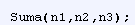

Las funciones son pilares fundamentales de JavaScript. Una funcion es un procedimiento o conjunto de sentencias que realizan una tarea
Para usar una funcion, se debe definir en algun lugar del programa para poder llamarlas
Definicion
La definición de una función consiste de la palabra reservada function seguida por:
- El nombre de la función (opcional).
- Una lista de argumentos para la función, encerrados entre paréntesis y separados por comas (,).
- Las sentencias JavaScript que definen la función, encerradas por llaves, { }
Si bien la declaración de la función es una sentencia, las funciones también pueden ser creadas por una expresión de función. Tal función puede ser anónima; no debe tener un nombre.
Llamada a la funcion
Definir una función no la ejecuta. Definir una función simplemente la nombra y especifica que hacer cuando la función es llamada
La función es lo que realmente realiza las acciones especificadas con los parámetros indicados
Pagina Principal